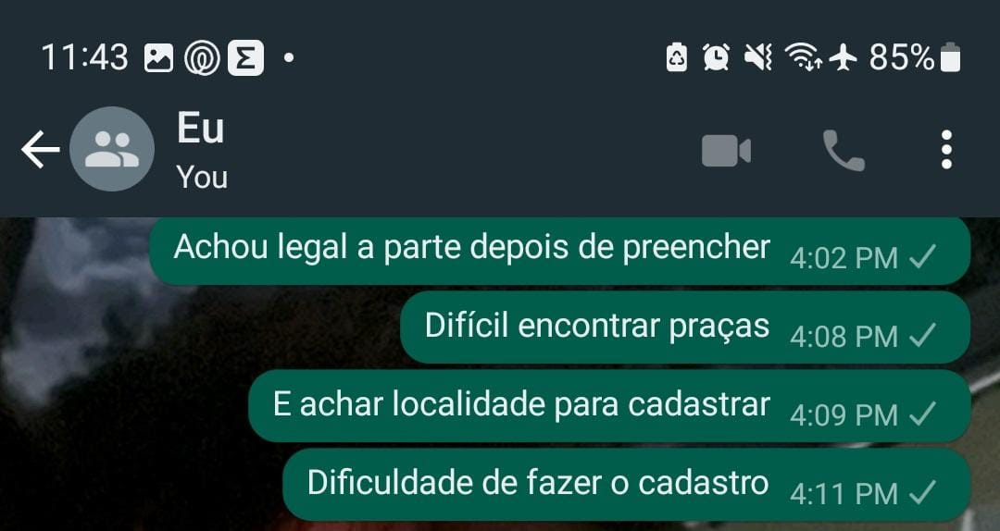

Cultura Educa Avaliação
Home
Extreme User Interview
Organizadora:
Elisa
Descrição:
Cientista social que trabalha em uma ONG de Campinas, trabalha com computadores diariamente, e não tem nenhuma dificuldade com tecnologia. Foi brevemente explicado a ideia do site porém não foi mostrado o caminho necessário para realizar o cadastro de uma atividade, somente que ela deveria fazer o cadastro.
Data de nascimento:
02/07/1979
Gênero:
Mulher Cis
Você conhecia o site Cultura Educa?
Não
Você achou/acha fácil de usar?
Sim, parece intuitivo. Mas achei difícil entender no cadastro, de quem eram as informações pedidas, se eram de mim, ou da atividade que estava sendo cadastrada.. ficou dúbio. Sugiro deixar muito nítido do que se trata a pergunta. Na hora de colocar o endereço da atividade, por ser numa praça, foi difícil achar. Está integrado com o maps?
O que você achou de positivo nele?
A ideia de cadastrar atividades que acontecem na minha organização, georreferenciada, achei fantástica. Achei o visual clean.
O que você achou de negativo nele?
Senti falta de ver mais sobre as pessoas por trás da iniciativa. Também não achei um contato. Acho importante. Na parte de achar uma atividade cadastrada, a barra lateral do lado do mapa, é de difícil acesso. E com a área do mapa é bem grande, eu tive dificuldade de manusear o mouse, para ir para a parte de baixo, onde aparece a informação que eu cliquei do mapa. Não é muito intuitivo essa parte. As bolinhas são pequenas. Elas são azuis, ou seja, da mesma cor de um ponto de ônibus no mapa. Se elas forem de cores diferentes, do que já tem no mapa, seria melhor.
Que melhorias você gostaria que houvesse?
A do cadastro, que achei confuso. Incluir ongs na narrativa de público de interesse. E as coisas ditas acima do mapa. Agora pensando aqui, fiquei na dúvida, se a rede social solicitada era de mim, ou da minha organização…
Você recomendaria o site? Por que?
Sim. Pois é uma forma de consolidar atividades da cidade.
Você pretende começar/continuar a usar?
Percebi que não tinha nada da minha cidade. Portanto, sem saber o alcance da ferramenta, creio que não usaria. Uma ideia seria fazer parceria com as prefeituras, para elas usarem, e isso impactaria diretamente em mais organizações usando.
Fly on the Wall
Observação
Acessou o site por um computador e assim que entrou na página inicial clicou no sobre para entender exatamente o que é e pra que serve o site, pois somente a tela principal não entendeu nada. Leu uma parte do sobre e achou muito longo, então parou de ler na metade. Teve dificuldade de entender o mapa e como criar uma atividade. Navegou para logar, depois rede, depois logar de novo e viu que teria que fazer o cadastro. Achou ruim ter que fazer o cadastro para poder criar uma atividade, ficou com preguiça de fazer o cadastro. Reclamou que não tem como ver a senha pra ver se digitou certo durante o cadastro. O link enviado para confirmar email e terminar o cadastro redireciona para continuar ao clicar no link, então se você só quer confirmar pelo celular fica ruim, tem que dar refresh pra poder continuar no computador. Achou confusa a ordem do cadastro e as perguntas, muita coisa a preencher. Tentou abrir o tutorial para entender melhor, porém não funcionou. Achou dúbio os campos de preenchimento do cadastro se é sobre a pessoa ou a organização que ela faz parte? Teve dificuldade de encontrar praças (que não possuem n° e rua) para a localidade do evento, e também é difícil de conseguir cadastrar o endereço em geral.
